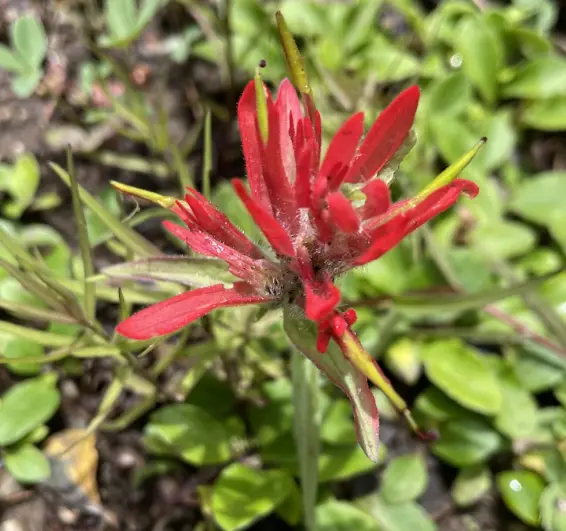

Les persones darrere del projecte
Qui som
Espaiet neix de la voluntat compartida d’oferir un espai de pausa, escolta i acompanyament, respectant també la mirada i el recorregut propi de cadascuna.
Una mirada compartida
Ens uneix una manera d’entendre l’acompanyament basada en l’escolta, la sensibilitat i el respecte pels temps de cada persona.
Espaiet no neix per uniformitzar dues maneres de treballar, sinó per posar-les en diàleg i oferir un espai on cada procés pugui trobar el seu lloc.
Des d’aquí, compartim una base comuna i, alhora, mantenim la identitat i l’estil propi de cadascuna.

Psicologia i acompanyament emocional
Ingrid Segura Bertomeu
Acompanyo processos personals des de l’escolta, la cura i el respecte, oferint un espai on poder posar paraules al que es viu i mirar-ho amb més claredat.
Entenc la teràpia com un lloc on aturar-se, comprendre millor allò que està passant i donar espai al propi procés sense pressa ni judicis.
La meva manera de treballar parteix de la proximitat, la confiança i la voluntat d’acompanyar cada persona des del lloc on es troba.
Acompanyament i procés terapèutic
Mònica Caballer Boix
La seva manera de treballar posa al centre la persona, el seu moment vital i la necessitat de trobar un espai segur des d’on comprendre, sostenir i transformar el que està passant.
Des d’una mirada respectuosa i propera, acompanya processos personals atenent la singularitat de cada història i la manera única de viure-la.
El seu enfocament busca oferir un lloc on sentir-se escoltada, acollida i acompanyada amb sensibilitat.
Com treballem des d’Espaiet
Tot i que cadascuna té la seva manera de treballar i el seu recorregut, compartim una mateixa base: crear un espai humà, respectuós i segur.
Si arribes a Espaiet, podem orientar-te i veure quina professional o quin tipus d’acompanyament encaixa millor amb el moment que estàs vivint.
Escriure’ns